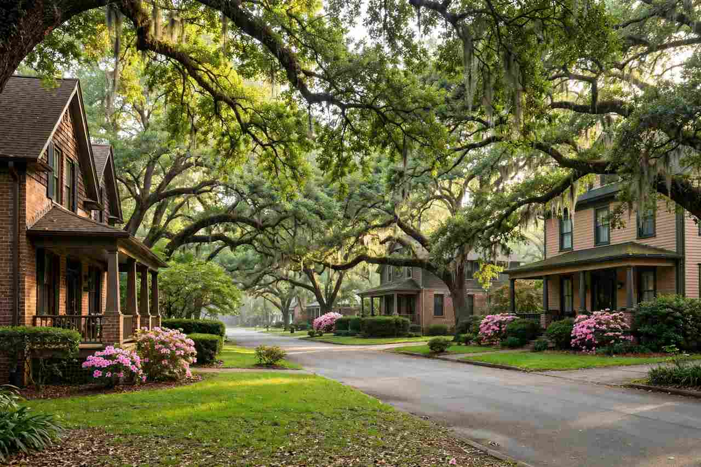

Rodent Control · Austell, GA
Fast Rodent Control in Austell, GA
If rodents have moved into your Austell home or business, Murvo can help today. Our local, licensed crews provide same-day inspection, targeted removal, durable exclusion, and cleanup, all under one flat-rate written quote with a written guarantee. No hourly billing and no surprise add-ons, just rodent specialists serving Austell and communities throughout Cobb County every day of the week. Service covers 3 ZIP codes across Cobb County, including 30106, 30168, 30111, with same-day appointments where schedules allow.
24/7Availability
3ZIP codes covered
Same-dayResponse
Licensed · Upfront options · Written guarantees · Fully insured
Austell at a glance
Local Rodent Control for Austell, GA.
Cobb County
Countynorthwest Georgia
RegionAtlanta · 13 mi
Nearest metro16 miles west of Atlanta
From Atlanta3
ZIP codes covered Service by service in Austell
Rodent Control Services Available in Austell
Thirty rodent services, one local standard in Austell: inspection-led, exclusion-first, and quoted in writing before work begins. Browse the full list for Cobb County below - each section explains what the service involves here, what it typically costs nationally, and how fast we can start.
- 01Rodent Control↗
- 02Rodent Inspection↗
- 03Rodent Removal↗
- 04Rodent Exclusion↗
- 05Rodent Proofing↗
- 06Rat Control↗
- 07Mice Control↗
- 08Mouse Removal↗
- 09Rat Removal↗
- 10Rodent Trapping↗
- 11Rodent Baiting↗
- 12Rodenticide Application↗
- 13Attic Rodent Removal↗
- 14Crawl Space Rodent Removal↗
- 15Wall Rodent Removal↗
- 16Kitchen Rodent Control↗
- 17Garage Rodent Control↗
- 18Commercial Rodent Control↗
- 19Residential Rodent Control↗
- 20Emergency Rodent Removal↗
- 21Same-Day Rodent Control↗
- 22Rodent Damage Repair↗
- 23Rodent Waste Cleanup↗
- 24Rodent Disinfection↗
- 25Rodent Odor Removal↗
- 26Dead Rodent Removal↗
- 27Rodent Dropping Cleanup↗
- 28Rodent Exclusion for Roofs↗
- 29Rodent Exclusion for Vents↗
- 30Rodent Exclusion for Chimneys↗
Rodent Control in Austell
Rodent Control in Austell
Most Austell calls start with a sound nobody can place, then droppings confirm what the noise suggested. Murvo treats rodent control as a sequence, not a single visit: find the species, clear what is inside, close what let it in. Before any work begins, you approve a flat-rate written quote.
When you need rodent control in Austell, the job starts with what is actually happening in your part of Cobb County. Murvo crews work Austell every week, so they know how Roof rat (Rattus rattus) and Norway rat (Rattus norvegicus) behave around bungalows and ranch homes with crawlspaces, historic homes, and suburban homes under mature tree canopy here - and where they get in: rooflines and eaves, attic vents, crawlspace doors and vents, and gaps where tree limbs touch the roof. We arrive equipped for the full job, confirm the flat rate in writing before work begins, and cover the whole Austell area, including Lithia Springs, Powder Springs. No call-center runaround and no open-ended hourly billing - just a local crew, a clear plan, and a written quote you approve first. Coverage for rodent control spans 3 ZIP codes in Cobb County, including 30106, 30168, 30111.
We start by identifying whether Roof rat (Rattus rattus), Norway rat (Rattus norvegicus), or both are active, because each species nests, feeds, and travels differently. Traps are placed on proven runways along walls, beams, and pipe runs, checked on schedule, and adjusted as catches change. Once numbers fall, exclusion sealing closes the route back in, droppings and nesting debris are removed hygienically, and follow-up monitoring checks the attic, crawl space, and kitchen until readings stay clear. Nothing is sealed while animals remain inside. That order protects your home.
When you call, tell us what you have seen and when the noises happen. Once you approve, trapping and sealing are booked in sequence, monitoring is scheduled, and the guarantee is left with you in writing at completion. That detail shapes the first visit. Your technician arrives as scheduled, inspects, and lays out findings before quoting. Keep the visit notes we leave behind; together they form a clear record of findings, approvals, completed work, and the monitoring results that closed the job.
Need help quickly in Austell? Call any time — the emergency line is staffed 24/7, and same-day rodent control appointments are available in most areas. We inspect first, explain the plan in plain language, and put the flat rate in writing before work starts. That is also why Murvo pairs removal with exclusion in Austell - treating the animal without closing rooflines and eaves, attic vents, crawlspace doors and vents, and gaps where tree limbs touch the roof rarely lasts.
Murvo does not quote rodent control sight unseen, because species, activity, and sealing needs change the work involved. After inspection you get one flat-rate written quote, and that is the figure you pay. As national context only, Angi's 2026 figures put rat and mouse removal and control at an average of $396, with a typical range of $189 to $655 — a benchmark, not a Murvo price.
Rodent Inspection in Austell
Rodent Inspection in Austell
In bungalows and ranch homes with crawlspaces, historic homes, and suburban homes under mature tree canopy, the gap that matters is seldom the gap you can see. Rodents enter through rooflines and eaves, attic vents, crawlspace doors and vents, and gaps where tree limbs touch the roof and travel hidden routes, so a rodent inspection in Cobb County has to look behind, above, and below. Our technicians trace those routes systematically and explain, in plain language, which findings demand action now.
In Austell, rodent inspection is not a generic spray-and-go service. Rodents exploit rooflines and eaves, attic vents, crawlspace doors and vents, and gaps where tree limbs touch the roof in bungalows and ranch homes with crawlspaces, historic homes, and suburban homes under mature tree canopy, and a fix that ignores those routes does not last. Murvo's Austell team inspects first, shows you the evidence - droppings, gnaw marks, entry gaps - and then lays out the work with a flat-rate written quote. We serve all of Cobb County from Austell, including Lithia Springs, Powder Springs, and every job is covered by our written workmanship guarantee. Homes near Vinings tend to show activity first in Austell, which is why inspections start with rooflines and eaves, attic vents, crawlspace doors and vents, and gaps where tree limbs touch the roof.
The inspection starts outside, where we check the foundation, siding, pipe penetrations, garage doors, and roof junctions, because mice can squeeze through a gap the width of a pencil. We also note where bungalows and ranch homes with crawlspaces, historic homes, and suburban homes under mature tree canopy create hidden routes through rooflines and eaves, attic vents, crawlspace doors and vents, and gaps where tree limbs touch the roof. Inside, we examine the attic, crawl space, insulation, stored items, and food areas for droppings, nests, rub marks, and gnaw damage. Every finding is photographed and explained, and recommendations are marked urgent or preventive so you can stage the work sensibly.
Booking a rodent inspection in Austell takes one call, and same-day appointments are often available. Findings are explained with photos before you receive a flat-rate written quote for any recommended work. Nothing proceeds without your approval, and urgent items are clearly flagged. Your technician arrives on time, walks the property with you, and inspects the attic, crawl space, and exterior in one visit. You keep the full written report either way.
Inspections are the fastest way we help in Austell: same-day appointments are available in most areas, and urgent calls are answered 24/7. A typical rodent inspection takes under an hour for most homes, and you leave the visit with photos, written findings, and a flat-rate quote for any work we recommend, so decisions never wait on us. The written quote for your Austell property will spell out exactly which of these applies before any work starts.
Your exact rodent inspection price is confirmed before we visit, and any follow-up work is quoted as a flat rate in writing after the inspection — no hourly billing. For context, Angi's 2026 data puts a professional rodent inspection nationally at $100 to $200, often credited toward the job if you proceed.
Rodent Removal in Austell
Rodent Removal in Austell
Removal works best when it is species-specific. In Austell, bungalows and ranch homes with crawlspaces, historic homes, and suburban homes under mature tree canopy give Roof rat (Rattus rattus) and Norway rat (Rattus norvegicus) warm voids, stored food, and quiet nesting corners reached through rooflines and eaves, attic vents, crawlspace doors and vents, and gaps where tree limbs touch the roof. Our licensed, insured technicians assess numbers and access routes first, then set traps on proven runways and return on schedule until catches fall to zero and monitoring stays clear.
In Austell, rodent removal is not a generic spray-and-go service. Rodents exploit rooflines and eaves, attic vents, crawlspace doors and vents, and gaps where tree limbs touch the roof in bungalows and ranch homes with crawlspaces, historic homes, and suburban homes under mature tree canopy, and a fix that ignores those routes does not last. Murvo's Austell team inspects first, shows you the evidence - droppings, gnaw marks, entry gaps - and then lays out the work with a flat-rate written quote. We serve all of Cobb County from Austell, including Lithia Springs, Powder Springs, and every job is covered by our written workmanship guarantee. The Austell crews who handle rodent removal also handle the follow-through - proofing, cleanup, and monitoring - so one visit can close the whole problem.
We favor trap-based, no-poison removal first where practical, which is safer around children and pets and avoids animals dying in hidden voids. Traps are matched to the species and setting, placed where droppings and rub marks show real travel routes, then cleared and reset until numbers reach zero. Dead animals in inaccessible places are located and retrieved before odor develops, contaminated nesting material is removed, and sealing recommendations are prioritized so the route indoors closes permanently. Monitoring then confirms the home stays clear.
Call, describe the signs, and we will set a visit window, often for the same day. Return visits are already booked, so clearing, resetting, and progress updates happen without you chasing anyone for news. The first appointment confirms species and numbers, explains the trapping sequence, and produces your written quote. With approval, traps go in immediately. Photographs and catch records are shared as the program runs, giving you visible proof of progress rather than a verbal summary at the end.
For active infestations in Austell, rodent removal can usually start the same day you call, and our team answers 24/7 when a rodent is loose in a living area. The first visit confirms activity and sets traps straight away; return visits then clear and reset them until monitoring shows the property is completely clear. The written quote for your Austell property will spell out exactly which of these applies before any work starts.
Cost depends on the species, how many animals are active, and how much sealing the home needs afterwards, so Murvo inspects first and quotes one flat rate in writing. For national context only, Angi's 2026 data averages rat and mouse removal at $396, typically $189 to $655. That benchmark is not a Murvo price; your written quote is the exact figure.
Rodent Exclusion in Austell
Rodent Exclusion in Austell
Rats can pass through a hole the size of a quarter, and mice through one far smaller, which is why bungalows and ranch homes with crawlspaces, historic homes, and suburban homes under mature tree canopy in Austell hide so many working entry points around rooflines and eaves, attic vents, crawlspace doors and vents, and gaps where tree limbs touch the roof. Our technicians inspect soffits, eaves, pipe entries, foundation cracks, and door sweeps in detail, then prioritize the openings that matter most for Roof rat (Rattus rattus) and Norway rat (Rattus norvegicus) locally.
In Austell, rodent exclusion is not a generic spray-and-go service. Rodents exploit rooflines and eaves, attic vents, crawlspace doors and vents, and gaps where tree limbs touch the roof in bungalows and ranch homes with crawlspaces, historic homes, and suburban homes under mature tree canopy, and a fix that ignores those routes does not last. Murvo's Austell team inspects first, shows you the evidence - droppings, gnaw marks, entry gaps - and then lays out the work with a flat-rate written quote. We serve all of Cobb County from Austell, including Lithia Springs, Powder Springs, and every job is covered by our written workmanship guarantee. The Austell crews who handle rodent exclusion also handle the follow-through - proofing, cleanup, and monitoring - so one visit can close the whole problem.
The sequence matters as much as the materials. Photographs record every finished seal with its location, building a reference you keep. Because a properly sealed home needs far less ongoing treatment, exclusion also lowers long-term reliance on bait. A later monitoring check tests the work honestly, revisiting each sealed point for fresh rub marks, droppings, or gnawing. Active openings are closed first, inactive weaknesses next, and purely cosmetic gaps last, so protection arrives where pressure is highest. The final monitoring visit therefore matters as much as the sealing day itself, and its findings are shared.
Before sealing day, confirm pets are secured and access to the roofline and foundation is clear. Afterwards you receive the photographs, the guarantee, and a date for the follow-up check that confirms everything is holding as intended. The crew then works through the agreed list, checks that no animals remain inside, and fits each seal cleanly. If monitoring ever finds fresh activity at a sealed point, that written inventory tells us exactly what to inspect first.
The first step is a survey, and in Austell we can often schedule that survey the same day you call about rodent exclusion. Sealing follows once active animals are cleared — nothing is ever sealed inside — and most homes are fully sealed within days, with entry points near wiring or food areas handled first. That is also why Murvo pairs removal with exclusion in Austell - treating the animal without closing rooflines and eaves, attic vents, crawlspace doors and vents, and gaps where tree limbs touch the roof rarely lasts.
For national context, Angi's 2026 data puts basic exclusion at $200 to $600, depending on access and the number of openings. That is a benchmark, not a Murvo price. After surveying your Austell home, we list every opening that needs sealing and quote one flat rate in writing, so you pay for the work your property actually needs and nothing more.
Rodent Proofing in Austell
Rodent Proofing in Austell
When is the right season for rodent proofing in Austell? Before cold weather sends rodents searching for indoor warmth, though any quiet month works well. Our licensed, insured technicians harden the structure, advise on food storage and vegetation, and leave a seasonal re-check booked, all backed by a written workmanship guarantee.
In Austell, rodent proofing is not a generic spray-and-go service. Rodents exploit rooflines and eaves, attic vents, crawlspace doors and vents, and gaps where tree limbs touch the roof in bungalows and ranch homes with crawlspaces, historic homes, and suburban homes under mature tree canopy, and a fix that ignores those routes does not last. Murvo's Austell team inspects first, shows you the evidence - droppings, gnaw marks, entry gaps - and then lays out the work with a flat-rate written quote. We serve all of Cobb County from Austell, including Lithia Springs, Powder Springs, and every job is covered by our written workmanship guarantee. Around Vinings, Lithia Springs, Powder Springs, the pattern is similar: Norway rat (Rattus norvegicus) finds rooflines and eaves, attic vents, crawlspace doors and vents, and gaps where tree limbs touch the roof first, and lasting rodent proofing has to close those routes.
Proofing divides naturally into structure, surroundings, and habits. Structure means sealing utility entries, screening vents and chimneys, and fitting sweeps where doors leak light. Surroundings means trimming branches back from the roofline, moving clutter and timber away from walls, and reducing sheltered harborage. Habits means securing pet food, bird seed, and stored produce so the property stops advertising itself. Technicians assess all three layers in one survey and rank the combined findings by impact, not by what is easiest to sell.
On proofing day, expect one tidy visit for most homes. Agreed sealing and screening are completed, sweeps are fitted, and attractant advice is tailored to your garage, kitchen, and yard. Before leaving, you walk the finished work together, confirm the guarantee in writing, and book the seasonal re-check that keeps the protection current year after year. The re-check is not a formality, because it catches shifted sweeps, damaged screens, and new gaps before rodents discover them first.
Rodent proofing is preventive, so there is rarely a rush, but surveys in Austell can often be arranged the same day you call, and always within a few days. Most proofing work is completed in a single visit once you approve the plan, and booking before colder weather gives your home protection ahead of the seasonal rush indoors. Around Austell, bungalows and ranch homes with crawlspaces, historic homes, and suburban homes under mature tree canopy give rodents the most cover, which is why entry points get checked before traps are set.
We survey your Austell property first, separate the quick wins you can handle yourself from the specialist sealing, and quote the professional work as one flat rate in writing so spending can be staged. Angi's 2026 national context puts exclusion, the core of proofing, at $200 to $600 for basic work — a benchmark only, not a Murvo price.
Rat Control in Austell
Rat Control in Austell
In Austell, bungalows and ranch homes with crawlspaces, historic homes, and suburban homes under mature tree canopy give Roof rat (Rattus rattus) and Norway rat (Rattus norvegicus) harborage in attics, basements, and outbuildings, with food and water rarely far away. Our licensed, insured technicians check drains, vents, and outbuildings too, because rats travel between structures and one missed harborage undermines the whole program. Safety briefings cover trap locations and hygiene so your household knows the plan.
When you need rat control in Austell, the job starts with what is actually happening in your part of Cobb County. Murvo crews work Austell every week, so they know how Roof rat (Rattus rattus) and Norway rat (Rattus norvegicus) behave around bungalows and ranch homes with crawlspaces, historic homes, and suburban homes under mature tree canopy here - and where they get in: rooflines and eaves, attic vents, crawlspace doors and vents, and gaps where tree limbs touch the roof. We arrive equipped for the full job, confirm the flat rate in writing before work begins, and cover the whole Austell area, including Lithia Springs, Powder Springs. No call-center runaround and no open-ended hourly billing - just a local crew, a clear plan, and a written quote you approve first. The Austell crews who handle rat control also handle the follow-through - proofing, cleanup, and monitoring - so one visit can close the whole problem.
Control starts with species and route identification, because roof rats and Norway rats behave and enter very differently. We then pair the program with roofline and entry-point exclusion, plus attic removal and cleanup where nests are found overhead. Technicians pre-bait unset traps along proven runways so wary rats feed confidently, then set them and return to check, clear, and adjust placements until activity stops. Trapped rats are removed hygienically, and each visit is documented with locations and counts. Progress is visible at every visit.
Between visits, keep pet food secured and avoid moving any traps, even slightly, since position matters. Your background-checked technician returns on schedule, removes trapped rats promptly, adjusts placements, and reports counts plainly. The program closes only when monitoring confirms activity has ended and exclusion is finished, with your guarantee confirmed in writing at sign-off. Keep gates and access points available on scheduled days where possible, since uninterrupted checks keep the program on its planned timetable.
Rats do not wait, and neither do we: rat control in Austell can usually start with a same-day inspection, and urgent calls are answered 24/7. Pre-baiting begins on the first visit once you approve the written quote, traps are set as soon as rats are feeding confidently, and scheduled checks keep the program moving until activity stops. That is also why Murvo pairs removal with exclusion in Austell - treating the animal without closing rooflines and eaves, attic vents, crawlspace doors and vents, and gaps where tree limbs touch the roof rarely lasts.
Rat work varies with species, colony size, and how many entry points need sealing, so Murvo inspects first and quotes one flat rate in writing. For national context only, Angi's 2026 data averages rat control and removal at $396, typically $189 to $655. That benchmark is not a Murvo price; the written quote for your Austell home is the exact figure you pay.
Mice Control in Austell
Mice Control in Austell
Small rice-like droppings, shredded nesting material, and faint scratching after dark are the classic signs mice have moved into an Austell home. Murvo's mice control surveys activity and entry points, traps in clusters along the routes mice travel nightly, and seals gaps as small as a pencil width. One flat-rate written quote covers the program before work begins.
When you need mice control in Austell, the job starts with what is actually happening in your part of Cobb County. Murvo crews work Austell every week, so they know how Roof rat (Rattus rattus) and Norway rat (Rattus norvegicus) behave around bungalows and ranch homes with crawlspaces, historic homes, and suburban homes under mature tree canopy here - and where they get in: rooflines and eaves, attic vents, crawlspace doors and vents, and gaps where tree limbs touch the roof. We arrive equipped for the full job, confirm the flat rate in writing before work begins, and cover the whole Austell area, including Lithia Springs, Powder Springs. No call-center runaround and no open-ended hourly billing - just a local crew, a clear plan, and a written quote you approve first. Around Vinings, Lithia Springs, Powder Springs, the pattern is similar: Norway rat (Rattus norvegicus) finds rooflines and eaves, attic vents, crawlspace doors and vents, and gaps where tree limbs touch the roof first, and lasting mice control has to close those routes.
Hygiene is part of control, not an afterthought. Droppings in cabinets are never dry-swept; surfaces are disinfected first, following careful practice, so contamination is not pushed into the air, and nesting debris is bagged and removed. Technicians also review how food, pet supplies, and bird seed are stored, since an open supply restarts activity quickly. The program favors traps over bait throughout, which keeps family kitchens safer and makes every result countable and visible. Follow-up monitoring then verifies the kitchen, attic, and voids together, rather than treating each room in isolation.
Book mice control in Austell with one call, and same-day visits are available in many areas. Trap checks are scheduled before we leave, and a follow-up visit confirms activity has stopped before the job is signed off. Your technician surveys the kitchen, attic, and voids, explains where mice are traveling, and gives you a flat-rate written quote before setting a single trap. Everything is explained in plain language for your household.
Mice multiply fast, so mice control in Austell is built to start fast too: a survey can often be arranged the same day you call, with traps set on that first visit once the quote is approved. Because mice investigate new objects quickly, catches usually begin soon after, and check visits follow until a final confirmation shows activity has stopped. Murvo's Austell crews explain the finding either way, and the flat-rate quote leaves the decision with you.
Mouse work is priced by the number of rooms affected and the amount of sealing involved, so Murvo surveys first and quotes one flat rate in writing. For national context only, Angi's 2026 data averages rat and mouse control and removal at $396, typically $189 to $655. That is not a Murvo price; your written quote is exact.
Mouse Removal in Austell
Mouse Removal in Austell
Removal is only half the job in Cobb County homes, because new mice follow the same scent trails and gaps within days. Murvo pairs trapping with droppings and nesting cleanup, safe disinfection, and proper exclusion sealing, all delivered by licensed, insured, background-checked technicians. For repeated problems, seasonal proofing checks sweeps and seals before the fall rush of mice seeking warmth.
In Austell, mouse removal is not a generic spray-and-go service. Rodents exploit rooflines and eaves, attic vents, crawlspace doors and vents, and gaps where tree limbs touch the roof in bungalows and ranch homes with crawlspaces, historic homes, and suburban homes under mature tree canopy, and a fix that ignores those routes does not last. Murvo's Austell team inspects first, shows you the evidence - droppings, gnaw marks, entry gaps - and then lays out the work with a flat-rate written quote. We serve all of Cobb County from Austell, including Lithia Springs, Powder Springs, and every job is covered by our written workmanship guarantee. Around Vinings, Lithia Springs, Powder Springs, the pattern is similar: Norway rat (Rattus norvegicus) finds rooflines and eaves, attic vents, crawlspace doors and vents, and gaps where tree limbs touch the roof first, and lasting mouse removal has to close those routes.
The survey comes first, and it is deliberately thorough. Lofts, under-floor voids, cabinets, and the spaces behind kitchen units are checked for nests, droppings, and stored food caches. Traps are then set in multiples at proven points, because a single trap rarely reflects colony size. Returns are scheduled tightly: catches are cleared, traps reset, and numbers tracked until they fall to zero and stay there across a confirming check before sealing begins. Photographs of nesting sites help here, because they reveal how far activity had spread before trapping began.
For mice active in living areas, call and we will aim for a same-day start where available. The first visit surveys nesting sites, sets out the multi-trap plan, and confirms your written quote. Traps are placed only after approval, return visits are booked ahead, and you receive a plain update after every check without chasing. Rooms are returned to normal use as soon as their checks are clear, and we tell you plainly which areas those are.
In Austell, mouse removal can often begin the same day you call, especially where mice are active in kitchens or living areas. The first visit surveys nesting sites and sets traps immediately after you approve the quote; because mice investigate traps quickly, catches usually start fast, and return visits continue until numbers reach zero. In Cobb County, activity follows the local season, so timing the work matters as much as the method.
Mouse removal cost reflects the number of rooms involved and how much sealing is needed, which is why Murvo surveys first and quotes a flat rate in writing. For national context only, Angi's 2026 data averages rat and mouse removal at $396, typically $189 to $655. That benchmark is not a Murvo price; your written quote covers your exact program.
Rat Removal in Austell
Rat Removal in Austell
If a rat is loose in a living area tonight, call; our lines stay open 24/7. Murvo pairs urgent response with a documented plan: hygienic removal across repeat visits, evidence from monitoring at the end, and a final walkthrough, so clearance is demonstrated to you rather than simply announced.
Homeowners in Austell call Murvo for rat removal because the problem here is specific: Roof rat (Rattus rattus) pressure around bungalows and ranch homes with crawlspaces, historic homes, and suburban homes under mature tree canopy, tight access at rooflines and eaves, attic vents, crawlspace doors and vents, and gaps where tree limbs touch the roof, and activity that follows the local season. Our Cobb County crews diagnose the real source before recommending work, explain the options in plain language, and quote one flat rate in writing. Across Austell - including Lithia Springs, Powder Springs - every visit is backed by licensed, insured technicians and our written workmanship guarantee. Homes near Vinings tend to show activity first in Austell, which is why inspections start with rooflines and eaves, attic vents, crawlspace doors and vents, and gaps where tree limbs touch the roof.
We lead with trapping and exclusion in an integrated, pet-conscious approach, using locked bait stations only where genuinely justified and monitored on schedule. Monitoring devices and a final walkthrough then provide documented evidence that activity has ended, and ongoing proofing keeps drains, vents, and rooflines checked afterwards. After clearance, contaminated insulation areas can be sanitized, and droppings are never dry-swept: following CDC guidance, surfaces are disinfected first before waste is removed. That evidence is always shared with you in writing.
Help the program by securing food, clearing access to the attic or basement, and leaving traps exactly where placed. Sign-off includes the documented evidence, your guarantee in writing, and practical proofing guidance tailored to how rats reached your property in the first place. Your background-checked technician handles removal, adjustments, sanitation, and the final monitoring period. You also receive guidance on drains, vegetation, and storage specific to your property, aimed at discouraging the next colony from settling.
Rats in a living area cannot wait for a routine slot. In Austell, rat removal can usually start the same day you call and our line answers 24/7 for urgent cases. Pre-baiting starts on the first visit after you approve the written quote, traps are set once rats feed confidently — typically within days — and frequent returns run until monitoring confirms the colony is gone. An Austell inspection confirms it on site - dropping size, gnaw marks, and entry points tell the story quickly.
Colony size, access, and the sealing needed afterwards drive the price, so Murvo assesses the property first and quotes a flat rate in writing covering the full program. Angi's 2026 data, for national context only, averages rat removal at $396 and typically ranges from $189 to $655; that is a benchmark, not a Murvo price.
Rodent Trapping in Austell
Rodent Trapping in Austell
Why choose trapping over poison in a family home? Every result is visible, countable, and removable, with no chemicals loose indoors and no animals dying in hidden voids. Murvo offers snap, multi-catch, and live-capture options, explains each placement for pet and child safety, and guarantees the finished program in writing.
When you need rodent trapping in Austell, the job starts with what is actually happening in your part of Cobb County. Murvo crews work Austell every week, so they know how Roof rat (Rattus rattus) and Norway rat (Rattus norvegicus) behave around bungalows and ranch homes with crawlspaces, historic homes, and suburban homes under mature tree canopy here - and where they get in: rooflines and eaves, attic vents, crawlspace doors and vents, and gaps where tree limbs touch the roof. We arrive equipped for the full job, confirm the flat rate in writing before work begins, and cover the whole Austell area, including Lithia Springs, Powder Springs. No call-center runaround and no open-ended hourly billing - just a local crew, a clear plan, and a written quote you approve first. Homes near Vinings tend to show activity first in Austell, which is why inspections start with rooflines and eaves, attic vents, crawlspace doors and vents, and gaps where tree limbs touch the roof.
A program opens with mapping, not trap placement. Devices are then selected for each location: snap traps for decisive results, multi-catch units on busy mouse routes, live-capture where release is preferred. For rats, pre-baiting runs several days before traps are set, the step most amateur attempts skip. Every device is numbered, recorded, and revisited on a fixed schedule. Technicians read droppings, rub marks, and gnaw damage to reconstruct nightly routes through attics, basements, and kitchens. The map also prevents a common mistake: removing a device that looks empty while its route is still active.
Between checks, leave devices untouched and note any new noises or droppings by room; that information sharpens the next visit. Your background-checked technician adjusts placements as the pattern changes and removes catches promptly and hygienically. The program ends with a clear monitoring result, a written summary of what was caught where, and sealing advice. The summary also notes which routes stayed busiest, information that makes any later exclusion work faster and more precisely targeted.
In Austell, rodent trapping can usually start the same day you call, with traps placed or pre-baiting begun on the first visit after you approve the quote. Mice often investigate within the first night; wary rats need a few days of pre-baiting before traps are set. Scheduled check visits then keep catches moving until numbers reach zero. In Cobb County, activity follows the local season, so timing the work matters as much as the method.
Rather than charging by the trap or by the visit, Murvo inspects first and quotes rodent trapping as one flat rate in writing for the complete program, including its check visits. Price depends on species, activity level, and how many checks are needed, and there is no hourly billing at any stage, so there are no per-visit surprises.
Rodent Baiting in Austell
Rodent Baiting in Austell
What rules govern bait near children, pets, and wildlife in Georgia? Strict ones, and Murvo follows them plainly. State rules restrict anticoagulant rodenticides, and Murvo applies the same care everywhere: no loose bait, no open trays, no unmonitored stations. Before placement, you review locations, risks, and alternatives with a licensed technician.
In Austell, rodent baiting is not a generic spray-and-go service. Rodents exploit rooflines and eaves, attic vents, crawlspace doors and vents, and gaps where tree limbs touch the roof in bungalows and ranch homes with crawlspaces, historic homes, and suburban homes under mature tree canopy, and a fix that ignores those routes does not last. Murvo's Austell team inspects first, shows you the evidence - droppings, gnaw marks, entry gaps - and then lays out the work with a flat-rate written quote. We serve all of Cobb County from Austell, including Lithia Springs, Powder Springs, and every job is covered by our written workmanship guarantee. The Austell crews who handle rodent baiting also handle the follow-through - proofing, cleanup, and monitoring - so one visit can close the whole problem.
Baiting follows Inspect, Remove, Exclude, Clean, and Monitor, and it never stands alone. We return on schedule to check consumption, record amounts, and adjust positions, and stations are removed when activity ends rather than left indefinitely. After a full inspection maps activity, background-checked technicians choose station locations along runways, fence lines, and entry points, away from pet play areas and food storage. Every station is tamper-resistant, locked, labeled, and anchored, with placement photographed for your records. Loose bait is never used anywhere.
Booking starts with a conversation about pets, children, and wildlife on your property, because that shapes placement before we arrive. Approved stations are installed locked and labeled that visit, with monitoring dates booked before we leave. The inspection visit maps activity, agrees each proposed station location with you, and confirms the written quote. Nothing about placement, product type, or monitoring frequency is left vague, and you can ask for the record at any point.
Deliberate setup matters more than speed with rodent baiting, but the first step is still fast: an inspection in Austell can often be arranged the same day you call. Stations are placed only after activity is mapped and you approve the written quote and each location, then monitoring runs on a fixed schedule until consumption stops and activity is confirmed clear. An Austell inspection confirms it on site - dropping size, gnaw marks, and entry points tell the story quickly.
Baiting cost depends on how many locked stations your property needs and how long monitoring runs, so Murvo inspects and maps activity first, then quotes one flat rate in writing covering placement and scheduled checks. There are no per-visit surprises, and because our approach is exclusion-first, the goal is always to reduce and eventually remove stations, not maintain them forever.
Rodenticide Application in Austell
Rodenticide Application in Austell
In bungalows and ranch homes with crawlspaces, historic homes, and suburban homes under mature tree canopy, product choice is only half the decision; placement and oversight matter just as much near rooflines and eaves, attic vents, crawlspace doors and vents, and gaps where tree limbs touch the roof routes in Cobb County. Licensed Murvo technicians use tamper-resistant locked stations exclusively, map and label every unit, record amounts at each visit, and retrieve accessible carcasses promptly to limit odor and secondary risks.
When you need rodenticide application in Austell, the job starts with what is actually happening in your part of Cobb County. Murvo crews work Austell every week, so they know how Roof rat (Rattus rattus) and Norway rat (Rattus norvegicus) behave around bungalows and ranch homes with crawlspaces, historic homes, and suburban homes under mature tree canopy here - and where they get in: rooflines and eaves, attic vents, crawlspace doors and vents, and gaps where tree limbs touch the roof. We arrive equipped for the full job, confirm the flat rate in writing before work begins, and cover the whole Austell area, including Lithia Springs, Powder Springs. No call-center runaround and no open-ended hourly billing - just a local crew, a clear plan, and a written quote you approve first. Homes near Vinings tend to show activity first in Austell, which is why inspections start with rooflines and eaves, attic vents, crawlspace doors and vents, and gaps where tree limbs touch the roof.
Monitoring data guides the whole treatment: whether it continues, changes product, or stops entirely in favor of proofing alone. Dead rodents are retrieved promptly where accessible, stations are kept away from pet and child areas, and every product used is documented with its label and safety information, so nothing applied at your property is ever hidden from you. We prioritize sealing entry points with exclusion and physical removal so dependence on chemical control shrinks visit by visit. State restrictions are checked before product selection.
Before the visit, tell us about children, pets, livestock, and wildlife using the property; that information shapes product and placement decisions. On the day, your background-checked technician installs any approved stations locked and labeled, records the details, and explains what to watch for. Scheduled checks follow until activity ends and stations are removed. Label information, amounts, and visit dates stay in your records throughout, so the treatment history is complete and available whenever needed.
No responsible rodenticide application starts without an inspection, and in Austell that inspection can often be scheduled the same day you call. If treatment is justified and you approve the written quote, locked stations are installed on that visit. Monitoring then runs on schedule, and treatment stops as soon as the data shows activity has ended. Around Austell, bungalows and ranch homes with crawlspaces, historic homes, and suburban homes under mature tree canopy give rodents the most cover, which is why entry points get checked before traps are set.
Application cost depends on the number of locked stations, the product required under Georgia rules, and how long monitoring runs. Murvo inspects first, explains whether trapping or exclusion could avoid chemical control entirely, and then quotes one flat rate in writing before work begins. The quote covers scheduled monitoring visits, so there are no per-visit surprises later.
Attic Rodent Removal in Austell
Attic Rodent Removal in Austell
Scratching overhead at night in Austell usually means Roof rat (Rattus rattus) climbing to the roofline or Norway rat (Rattus norvegicus) slipping through vent gaps into your attic. Murvo's attic rodent removal inspects the attic, roof, and eaves, traps active animals up there, and seals the roofline behind them. Same-day visits are prioritized when chewed wiring is found, because that damage is a genuine fire risk.
Homeowners in Austell call Murvo for attic rodent removal because the problem here is specific: Roof rat (Rattus rattus) pressure around bungalows and ranch homes with crawlspaces, historic homes, and suburban homes under mature tree canopy, tight access at rooflines and eaves, attic vents, crawlspace doors and vents, and gaps where tree limbs touch the roof, and activity that follows the local season. Our Cobb County crews diagnose the real source before recommending work, explain the options in plain language, and quote one flat rate in writing. Across Austell - including Lithia Springs, Powder Springs - every visit is backed by licensed, insured technicians and our written workmanship guarantee. Around Vinings, Lithia Springs, Powder Springs, the pattern is similar: Norway rat (Rattus norvegicus) finds rooflines and eaves, attic vents, crawlspace doors and vents, and gaps where tree limbs touch the roof first, and lasting attic rodent removal has to close those routes.
Cleanup overhead demands care. Adjoining crawl spaces are checked before the job is signed off as complete. Droppings and nesting material are never dry-swept, because that can spread contamination into the air; surfaces are disinfected first, then waste is removed hygienically by technicians in protective equipment. Contaminated insulation is assessed honestly, with repair referrals where replacement is warranted. Poison is avoided in attics deliberately, since animals dying in inaccessible corners create odor and retrieval problems. The result is a documented attic: cleared, sealed, cleaned where needed, and verified quiet before closure.
Book attic rodent removal in Austell and we will arrange an attic visit, same-day where chewed wiring or heavy activity makes it urgent. Trapping checks follow on schedule, sealing and cleanup complete the job, and monitoring confirms the attic stays clear under guarantee. Your technician inspects the attic and roofline, shows you photographs of the evidence, and confirms a flat-rate written quote before removal begins. You approve every stage before it happens.
Overhead scratching in Austell often gets a same-day attic rodent removal visit, and attics with chewed wiring are prioritized because of the fire risk. Trapping starts on the first visit once you approve the written quote, checks run on schedule, and most attics are cleared and sealed within days. Monitoring stays in place briefly afterwards to confirm nothing remains inside. Around Austell, bungalows and ranch homes with crawlspaces, historic homes, and suburban homes under mature tree canopy give rodents the most cover, which is why entry points get checked before traps are set.
Activity levels, roofline sealing, and whether contaminated insulation needs cleanup all affect attic pricing, so Murvo inspects first and quotes one flat rate in writing for the removal program. Cleanup options are priced separately in writing before you decide, so nothing is added once work is underway.
Crawl Space Rodent Removal in Austell
Crawl Space Rodent Removal in Austell
Most Austell crawl-space problems surface indirectly: a smell through the floorboards, a torn vapor barrier, droppings found during unrelated repairs. Murvo inspects beneath the home, traps active animals there, and seals vents and foundation gaps. One flat-rate written quote is agreed before trapping starts below.
In Austell, crawl space rodent removal is not a generic spray-and-go service. Rodents exploit rooflines and eaves, attic vents, crawlspace doors and vents, and gaps where tree limbs touch the roof in bungalows and ranch homes with crawlspaces, historic homes, and suburban homes under mature tree canopy, and a fix that ignores those routes does not last. Murvo's Austell team inspects first, shows you the evidence - droppings, gnaw marks, entry gaps - and then lays out the work with a flat-rate written quote. We serve all of Cobb County from Austell, including Lithia Springs, Powder Springs, and every job is covered by our written workmanship guarantee. Coverage for crawl space rodent removal spans 3 ZIP codes in Cobb County, including 30106, 30168, 30111.
Cleanup below a home follows CDC guidance: droppings and nesting debris are never dry-swept, because disturbing them can spread contamination; surfaces are disinfected first, then waste is bagged and removed by technicians in protective equipment. Photographs of finished sealing are supplied with your guarantee paperwork, and access panels are refitted securely after every visit. We also trace connections upward through wall voids, since treating the crawl space alone misses rodents traveling to the attic. Moisture problems found are reported with practical recommendations.
Schedule an under-home inspection, usually within days and sooner when odors reach living areas. Your technician photographs conditions below, explains findings in plain language, and confirms the written quote before any trapping. Clearance, vent screening, and cleanup then follow in sequence, with monitoring left in place until the space below is confirmed quiet. Photographs from below the home accompany the final paperwork, which is especially useful because few homeowners ever see that space themselves.
For crawl space rodent removal in Austell, inspections are usually arranged within a few days — and sooner when odors are drifting into living areas or activity sounds heavy. Trapping begins on the first visit after you approve the written quote, clearance and sealing follow in sequence, and monitoring stays in place until the space below is confirmed quiet. That is also why Murvo pairs removal with exclusion in Austell - treating the animal without closing rooflines and eaves, attic vents, crawlspace doors and vents, and gaps where tree limbs touch the roof rarely lasts.
Access, the number of vents and gaps to seal, and whether waste cleanup is required all shape crawl-space pricing, so Murvo inspects first and quotes one flat rate in writing. Cleanup options are priced in writing before you decide whether to include them, and there are no surprise charges for extra vents within the agreed scope.
Wall Rodent Removal in Austell
Wall Rodent Removal in Austell
Wall voids are hidden highways through bungalows and ranch homes with crawlspaces, historic homes, and suburban homes under mature tree canopy in Austell: mice travel them between kitchens and attics, and rats use them to reach food unseen via rooflines and eaves, attic vents, crawlspace doors and vents, and gaps where tree limbs touch the roof. Our technicians carry inspection cameras for accessible voids, helping locate nests without opening large sections of drywall. If an animal has already died in the wall, retrieval and sanitation are handled too.
In Austell, wall rodent removal is not a generic spray-and-go service. Rodents exploit rooflines and eaves, attic vents, crawlspace doors and vents, and gaps where tree limbs touch the roof in bungalows and ranch homes with crawlspaces, historic homes, and suburban homes under mature tree canopy, and a fix that ignores those routes does not last. Murvo's Austell team inspects first, shows you the evidence - droppings, gnaw marks, entry gaps - and then lays out the work with a flat-rate written quote. We serve all of Cobb County from Austell, including Lithia Springs, Powder Springs, and every job is covered by our written workmanship guarantee. Around Vinings, Lithia Springs, Powder Springs, the pattern is similar: Norway rat (Rattus norvegicus) finds rooflines and eaves, attic vents, crawlspace doors and vents, and gaps where tree limbs touch the roof first, and lasting wall rodent removal has to close those routes.
Once the void is clear, we apply proofing to wall entry routes, sealing baseboard and pipe gaps linked to kitchen activity so the route cannot reopen. If a rodent has died in the wall, retrieval is followed by sanitation: contaminated material is never dry-swept, surfaces are disinfected first following CDC guidance, and odor treatment is applied so other rodents are not attracted back. Monitoring at key access points then confirms the void stays quiet. Connected voids are checked before we finish.
After booking, tell us when the noises happen; timing helps pinpoint the active void before we arrive. Follow-up visits clear traps and run quiet-wall checks at different times of day. Sign-off happens only when monitoring confirms silence. On the day, your background-checked technician listens, traces, and inspects with cameras where possible, then sets traps at access points once you approve the quote. Any access cut is agreed and made good neatly.
Persistent wall scratching in Austell often qualifies for a same-day locating visit, especially when it is keeping you awake. On that first visit, once you approve the written quote, traps are set at void access points; because rodents travel the void nightly, results usually follow within days. Quiet-wall checks confirm the silence before we sign off. An Austell inspection confirms it on site - dropping size, gnaw marks, and entry points tell the story quickly.
How precisely the activity can be located, and whether a minimal access cut turns out to be needed, decide the price of wall work. Murvo therefore locates the activity first and quotes a flat rate in writing, covering the trapping, sealing, and monitoring in your plan, so wall access never becomes an open-ended bill.
Kitchen Rodent Control in Austell
Kitchen Rodent Control in Austell
Kitchens in bungalows and ranch homes with crawlspaces, historic homes, and suburban homes under mature tree canopy offer rodents food, water and warmth behind fridges, ovens and sinks. Murvo's kitchen rodent control in Austell starts behind those appliances, removes the animals without loose poison near food, and leaves simple hygiene notes covering bins, pet bowls and rarely moved appliances. Background-checked technicians carry out every visit.
When you need kitchen rodent control in Austell, the job starts with what is actually happening in your part of Cobb County. Murvo crews work Austell every week, so they know how Roof rat (Rattus rattus) and Norway rat (Rattus norvegicus) behave around bungalows and ranch homes with crawlspaces, historic homes, and suburban homes under mature tree canopy here - and where they get in: rooflines and eaves, attic vents, crawlspace doors and vents, and gaps where tree limbs touch the roof. We arrive equipped for the full job, confirm the flat rate in writing before work begins, and cover the whole Austell area, including Lithia Springs, Powder Springs. No call-center runaround and no open-ended hourly billing - just a local crew, a clear plan, and a written quote you approve first. Around Vinings, Lithia Springs, Powder Springs, the pattern is similar: Norway rat (Rattus norvegicus) finds rooflines and eaves, attic vents, crawlspace doors and vents, and gaps where tree limbs touch the roof first, and lasting kitchen rodent control has to close those routes.
In tricky cases we use nighttime trail cameras to pinpoint exactly which gap a cautious mouse is traveling through. Everything follows integrated pest management: remove the animals, block the routes, take away the food and water drawing them in. That combination, rather than a single treatment, is what keeps kitchens in Austell rodent-free. The process combines targeted trapping, sealing of pipe, cabinet and kickboard gaps, disinfection guidance for contaminated food areas, and follow-up monitoring visits. The same careful standard applies on every single visit.
It starts with a short call about sightings, sounds and access behind appliances. Approved work removes the animals, closes entry gaps and addresses contaminated surfaces. On arrival, your technician confirms the route rodents are using before quoting the full job in writing. We return as agreed to verify results, adjust if needed, and leave you with clear notes on what was sealed, what was cleaned, and what to watch for next.
Our phone lines are open 24/7, and kitchen cases involving droppings near food preparation areas are treated as a priority. In many Austell cases we can arrange a same-day visit, subject to technician availability. Call, describe what you have found, and we will offer the earliest appointment we can. That is also why Murvo pairs removal with exclusion in Austell - treating the animal without closing rooflines and eaves, attic vents, crawlspace doors and vents, and gaps where tree limbs touch the roof rarely lasts.
Cost depends on how many rodents are active, where they are entering, and how much sealing and cleanup the kitchen needs. Murvo inspects first, then gives one flat-rate written quote covering trapping, sealing and follow-up monitoring, with no hourly billing or add-on surprises. You approve the full price before any work begins, and the quote is backed by our written workmanship guarantee.
Garage Rodent Control in Austell
Garage Rodent Control in Austell
Boxes stacked against a wall make perfect cover. While the garage stays undisturbed, rodents chew, nest and breed out of sight in many bungalows and ranch homes with crawlspaces, historic homes, and suburban homes under mature tree canopy. Our team in Austell works through the clutter zones methodically, removes the animals, cleans affected spots, and shows you how raised, sealed storage removes the shelter they depend on.
In Austell, garage rodent control is not a generic spray-and-go service. Rodents exploit rooflines and eaves, attic vents, crawlspace doors and vents, and gaps where tree limbs touch the roof in bungalows and ranch homes with crawlspaces, historic homes, and suburban homes under mature tree canopy, and a fix that ignores those routes does not last. Murvo's Austell team inspects first, shows you the evidence - droppings, gnaw marks, entry gaps - and then lays out the work with a flat-rate written quote. We serve all of Cobb County from Austell, including Lithia Springs, Powder Springs, and every job is covered by our written workmanship guarantee. Around Vinings, Lithia Springs, Powder Springs, the pattern is similar: Norway rat (Rattus norvegicus) finds rooflines and eaves, attic vents, crawlspace doors and vents, and gaps where tree limbs touch the roof first, and lasting garage rodent control has to close those routes.
Inspection covers the garage door seal, corners, wall plates, stored boxes, pet food and bird seed, plus any holes where pipes or cables pass into the house. Entry points are then sealed with gnaw-resistant materials, the door bottom is proofed, and we advise on raised, sealed storage. Monitoring checks confirm activity has stopped before we finish. We identify the species from droppings and gnaw marks, set traps along the runways rodents actually use, and remove nesting material safely. Materials are chosen for durability, not the cheapest quick fix.
After booking, we agree access arrangements for vehicles and stored items. If activity persists within the guarantee terms, we return and address it, as set out in your written guarantee. Your technician inspects, quotes in writing, and only starts once you approve. Removal, proofing and cleanup follow in a sensible order, so sealing never traps animals inside. Monitoring continues afterwards, and we report progress at each visit. The plan is agreed with you before any work begins.
We answer calls 24/7 and treat garages with active nesting, chewed wiring or rodents moving into the house as urgent. Same-day appointments in Austell are often available, depending on technician schedules. Call with a description of the signs you have seen and we will offer you the earliest visit we can. The written quote for your Austell property will spell out exactly which of these applies before any work starts.
Pricing depends on garage size, how established the infestation is, and how much proofing the doors and walls need. Murvo inspects first and quotes one flat rate in writing, covering trapping, nest removal, sealing and monitoring, with no hourly charges. Nothing starts until you approve that price, and the completed work is backed by our written workmanship guarantee.
Commercial Rodent Control in Austell
Commercial Rodent Control in Austell
Rodents threaten more than stock: they threaten licences, ratings and reputation. Murvo builds commercial programs for Austell businesses around inspection, removal, exclusion and monitoring, scheduled discreetly around trading hours. You receive a flat-rate written quote for initial work and clear scheduled-service pricing afterwards. Call Murvo today for straightforward help.
Homeowners in Austell call Murvo for commercial rodent control because the problem here is specific: Roof rat (Rattus rattus) pressure around bungalows and ranch homes with crawlspaces, historic homes, and suburban homes under mature tree canopy, tight access at rooflines and eaves, attic vents, crawlspace doors and vents, and gaps where tree limbs touch the roof, and activity that follows the local season. Our Cobb County crews diagnose the real source before recommending work, explain the options in plain language, and quote one flat rate in writing. Across Austell - including Lithia Springs, Powder Springs - every visit is backed by licensed, insured technicians and our written workmanship guarantee. Seasonal timing matters for commercial rodent control in Austell: Rodents are most active in Austell from September through February.
A site-wide inspection covers kitchens, loading docks, bin areas, storage, staff areas and roof voids, identifying species, pressure points and compliance risks. Exclusion seals dock doors, vents and service penetrations. Written service reports and trend reporting follow every visit, showing activity falling over time, exactly what health inspectors and food-safety auditors want documented. We deploy monitored trapping and, outdoors only, locked stations where appropriate, with full product records and no loose rodenticide near food. Nothing is left to guesswork at any stage.
First comes a conversation about your site, sector and any audit deadlines ahead. Work then proceeds around your hours, keeping customers and deliveries moving. Each visit closes with findings in writing and clear next actions. Next, a full survey documents entry points, harborage and activity, followed by a written price for the agreed scope. Managers review progress with us regularly, so the program stays matched to the building, the season and the level of rodent pressure outside.
Commercial calls are taken 24/7, and a live sighting during trading is handled as an emergency with discretion to protect customers and reputation. The visit we can offer in Austell depends on technician availability, and we will always give you the earliest one possible. We can also advise on immediate steps to protect stock and your audit position while you wait. In Cobb County, most cases involve the Roof rat (Rattus rattus) and the Norway rat (Rattus norvegicus), so the inspection focuses on their routes first.
Commercial pricing depends on site size, sector, activity levels and how much exclusion and monitoring the site needs. Restaurants, warehouses and food premises are scoped individually after a survey. Murvo quotes a flat rate in writing for initial work, or a clear scheduled-service price for ongoing programs, before anything begins. There are no vague charges, and reports are included for your audit file.
Residential Rodent Control in Austell
Residential Rodent Control in Austell
Homes in bungalows and ranch homes with crawlspaces, historic homes, and suburban homes under mature tree canopy give rodents warmth, food and quiet nesting space. Our residential rodent control in Austell starts with a thorough inspection, uses pet-conscious methods with no loose poison indoors, and backs the finished work with a written workmanship guarantee from licensed, insured technicians. Help is available around the clock, every day.
In Austell, residential rodent control is not a generic spray-and-go service. Rodents exploit rooflines and eaves, attic vents, crawlspace doors and vents, and gaps where tree limbs touch the roof in bungalows and ranch homes with crawlspaces, historic homes, and suburban homes under mature tree canopy, and a fix that ignores those routes does not last. Murvo's Austell team inspects first, shows you the evidence - droppings, gnaw marks, entry gaps - and then lays out the work with a flat-rate written quote. We serve all of Cobb County from Austell, including Lithia Springs, Powder Springs, and every job is covered by our written workmanship guarantee. Seasonal timing matters for residential rodent control in Austell: Rodents are most active in Austell from September through February.
Instead of treating one room and hoping, we follow the connections: roof to wall void, garage to kitchen, crawl space to pipework. That route map shapes everything that follows. Traps go on active lines, entry points get sealed once animals are out, and any soiled material is removed with proper cleaning. We note weak spots outside too, like overhanging branches or gaps under doors. Monitoring continues after the main work, because quiet for a week means little unless repeat checks confirm it over time.
After booking, a licensed, background-checked technician arrives at the agreed time and inspects the whole property. Once approved, removal, sealing and cleanup go ahead in the right order. We return for monitoring visits, report what we find each time, and close the job only when activity has stopped. The work is backed by our written workmanship guarantee. You receive one flat-rate written quote covering the plan before work starts. We leave the area tidy when the work finishes.
We are available 24/7 by phone, and homes with rodents in living areas, kitchens or children's bedrooms are prioritized. Same-day visits in Austell are often possible, subject to technician availability. Tell us what you have seen or heard, and we will offer the earliest appointment available and advise what to do meanwhile. Murvo's Austell crews explain the finding either way, and the flat-rate quote leaves the decision with you.
Cost depends on the species, how established the infestation is, and how much exclusion and cleanup your home needs. Murvo inspects first, then quotes one flat rate in writing covering removal, sealing, cleaning and monitoring, with no hourly charges or add-on surprises. You approve the price before work begins, and everything is backed by our written workmanship guarantee.
Emergency Rodent Removal in Austell
Emergency Rodent Removal in Austell
A rat in the kitchen, scratching inside a bedroom wall or droppings found where children play cannot wait for a routine appointment. Our emergency rodent removal in Austell is available 24/7, with licensed technicians who remove the animals, secure entry points and make the space safe again.
When you need emergency rodent removal in Austell, the job starts with what is actually happening in your part of Cobb County. Murvo crews work Austell every week, so they know how Roof rat (Rattus rattus) and Norway rat (Rattus norvegicus) behave around bungalows and ranch homes with crawlspaces, historic homes, and suburban homes under mature tree canopy here - and where they get in: rooflines and eaves, attic vents, crawlspace doors and vents, and gaps where tree limbs touch the roof. We arrive equipped for the full job, confirm the flat rate in writing before work begins, and cover the whole Austell area, including Lithia Springs, Powder Springs. No call-center runaround and no open-ended hourly billing - just a local crew, a clear plan, and a written quote you approve first. Around Vinings, Lithia Springs, Powder Springs, the pattern is similar: Norway rat (Rattus norvegicus) finds rooflines and eaves, attic vents, crawlspace doors and vents, and gaps where tree limbs touch the roof first, and lasting emergency rodent removal has to close those routes.
Calls get sorted by risk before a technician is dispatched: an animal in a bedroom, contamination near food, or damage to wiring moves to the front. Connected voids get checked for droppings, nesting or further movement. On site, the affected area is made safe, then the rodent is located and removed using methods suited to that spot. Openings are secured where possible during the same visit, contaminated surfaces are cleaned, and monitoring is placed so any remaining activity shows up quickly instead of surprising you again later.
Call any time, day or night, and describe what is happening. We agree the earliest visit available and any steps to keep people and pets safe meanwhile. On arrival the technician inspects, quotes one flat rate in writing, and starts once you approve. Removal and securing come first, then disinfection and monitoring. Follow-up visits confirm the home is clear, under our written workmanship guarantee. You stay informed at every stage of the work.
For emergencies, our line is open 24/7, every day, and calls from Austell are triaged by risk — live rodents in living areas, food contamination and chewed wiring come first. We will offer the earliest visit our technicians can reach. Until then, we will talk you through simple steps to keep people and pets safe. In Cobb County, activity follows the local season, so timing the work matters as much as the method.
For national context, Angi's 2026 data puts rat extermination at $189-$655, averaging $396, though emergency work is not priced from those figures and they are not Murvo prices. Location, numbers involved and the securing, cleanup or follow-up needed set the scope. On arrival Murvo inspects and quotes one flat rate in writing, with no hourly billing even on urgent jobs, and nothing starts until you approve it.
Same-Day Rodent Control in Austell
Same-Day Rodent Control in Austell
Speed helps only when the work holds up. A same-day visit in Austell still covers species identification, trap placement on real runways and a written plan for sealing and follow-up. Our lines are open 24/7, so you can call early, explain the signs, and give our technicians the best chance to reach you today.
Homeowners in Austell call Murvo for same-day rodent control because the problem here is specific: Roof rat (Rattus rattus) pressure around bungalows and ranch homes with crawlspaces, historic homes, and suburban homes under mature tree canopy, tight access at rooflines and eaves, attic vents, crawlspace doors and vents, and gaps where tree limbs touch the roof, and activity that follows the local season. Our Cobb County crews diagnose the real source before recommending work, explain the options in plain language, and quote one flat rate in writing. Across Austell - including Lithia Springs, Powder Springs - every visit is backed by licensed, insured technicians and our written workmanship guarantee. Coverage for same-day rodent control spans 3 ZIP codes in Cobb County, including 30106, 30168, 30111.
Calling early gives the day structure. We gather the key facts by phone, then the technician begins on site with evidence: droppings, gnaw marks, sounds and likely entry points such as rooflines and eaves, attic vents, crawlspace doors and vents, and gaps where tree limbs touch the roof. Traps are set during that first visit wherever activity is confirmed, positioned with children and pets in mind. Gaps are logged and either sealed then or scheduled promptly, contaminated areas are addressed, and monitoring dates are set before we leave. You receive a written summary of what today covered and what happens next.
Booking takes one call. We confirm access, pets and where signs have been seen, then dispatch a technician as schedules allow. On site, inspection comes first, then your written quote and plan. Approved treatment begins the same visit, with follow-up appointments booked before we leave. We report progress honestly at each check, and only close the job when monitoring shows the property is clear. Questions are answered honestly throughout, with findings in writing.
Call as early in the day as you can and we will offer the earliest same-day appointment our Austell technicians can reach, subject to availability. Our lines are open 24/7. If today is fully booked, we will offer the next available visit and advise on simple precautions to take meanwhile. In Cobb County, activity follows the local season, so timing the work matters as much as the method.
Same-day work is priced the same fair way as any Murvo job: inspection first, then one flat-rate written quote based on species, activity levels and the exclusion and cleanup needed. There is no hourly billing and no premium surprise for speed. You approve the full price before treatment begins, and the work is backed by our written workmanship guarantee.
Rodent Damage Repair in Austell
Rodent Damage Repair in Austell
Repair only makes sense once rodents are gone and excluded. In Austell Murvo sequences removal, exclusion and repair as one plan, quoted as a flat-rate written quote before work starts, covering gnawed materials, damaged insulation and the holes rodents made getting in. Call Murvo today for straightforward help.
When you need rodent damage repair in Austell, the job starts with what is actually happening in your part of Cobb County. Murvo crews work Austell every week, so they know how Roof rat (Rattus rattus) and Norway rat (Rattus norvegicus) behave around bungalows and ranch homes with crawlspaces, historic homes, and suburban homes under mature tree canopy here - and where they get in: rooflines and eaves, attic vents, crawlspace doors and vents, and gaps where tree limbs touch the roof. We arrive equipped for the full job, confirm the flat rate in writing before work begins, and cover the whole Austell area, including Lithia Springs, Powder Springs. No call-center runaround and no open-ended hourly billing - just a local crew, a clear plan, and a written quote you approve first. Seasonal timing matters for rodent damage repair in Austell: Rodents are most active in Austell from September through February.
Photographs and a room-by-room list keep the scope honest. Insulation soaked with waste is removed only after disinfectant treatment, handled in protective gear, and replaced to a proper depth. Gnawed holes get repaired with materials rodents cannot chew through easily, vent covers are replaced with sturdier versions, and surfaces are disinfected once debris is gone. Safety items lead the list, especially wiring that may need a licensed electrician to inspect. The final walk-through compares each finished item against the list agreed with you at the start.
After booking, a technician inspects the damage alongside your removal and exclusion plan, photographing and listing what needs repair. We walk the finished work with you and confirm what was done. Everything is backed by our written workmanship guarantee. You receive one flat-rate written quote before work starts. Once approved, contaminated material is removed safely, repairs and replacement insulation are completed, and entry points are proofed. You stay informed at every stage of the work.
Damage repair is scheduled once removal and exclusion are under way, so repairs are not undone by active rodents. We are available 24/7 by phone, and urgent safety issues in Austell, such as chewed wiring, are prioritized for assessment. Call and describe the damage, and we will arrange the earliest suitable visit. In Cobb County, activity follows the local season, so timing the work matters as much as the method.
For national context, Angi's 2026 figures show rat extermination ranging from $189-$655, with an average of $396; repair costs are separate and those figures are not Murvo prices. How much material is damaged, whether insulation needs replacing and how many entry points need repair and proofing all affect scope. Murvo assesses first, then quotes one flat rate in writing for the agreed work, with no hourly billing, for your approval before repairs begin.
Rodent Waste Cleanup in Austell
Rodent Waste Cleanup in Austell
Rodent waste can carry bacteria and viruses, including hantavirus, which becomes airborne when dried waste is disturbed. Murvo's rodent waste cleanup in Austell handles attics, crawl spaces and living areas safely, bagging and removing contaminated material after disinfectant soaking. You approve a flat-rate written quote first. It is a complete service, not a quick spray.
When you need rodent waste cleanup in Austell, the job starts with what is actually happening in your part of Cobb County. Murvo crews work Austell every week, so they know how Roof rat (Rattus rattus) and Norway rat (Rattus norvegicus) behave around bungalows and ranch homes with crawlspaces, historic homes, and suburban homes under mature tree canopy here - and where they get in: rooflines and eaves, attic vents, crawlspace doors and vents, and gaps where tree limbs touch the roof. We arrive equipped for the full job, confirm the flat rate in writing before work begins, and cover the whole Austell area, including Lithia Springs, Powder Springs. No call-center runaround and no open-ended hourly billing - just a local crew, a clear plan, and a written quote you approve first. Homes near Vinings tend to show activity first in Austell, which is why inspections start with rooflines and eaves, attic vents, crawlspace doors and vents, and gaps where tree limbs touch the roof.
Order matters with contaminated material, and CDC guidance sets that order. Bagged waste leaves sealed. First, the space is ventilated with nobody else inside. Next, droppings, nesting and soiled insulation are soaked with disinfectant and left to sit for the required time. Technicians in gloves, respirators and protective clothing then remove everything by hand; nothing is ever dry-swept or vacuumed, since that can aerosolize harmful particles. Finally, hard surfaces are washed and disinfected again, and we confirm when the area can be entered safely.
A short call starts things off; photographs can help us plan access and equipment. On arrival, the technician checks the extent of waste, confirms the written price, and only then opens up the work area. Ventilation comes first, disinfectant soaking second, careful removal third. Surfaces are disinfected once waste is out, and the area is left to dry before use. We close by explaining what was removed, what was treated, and which gaps still need proofing to prevent a repeat.
We answer 24/7 and prioritize heavy contamination in living areas, especially where children or pets are present. Availability in Austell depends on technician schedules, but we will offer the earliest visit we can. Meanwhile, keep people and pets out of the area, ventilate if safe, and never dry-sweep or vacuum droppings. Murvo's Austell crews explain the finding either way, and the flat-rate quote leaves the decision with you.
Cleanup is priced by the volume and location of contaminated material, not by a national average. That said, Angi's 2026 figures put rat extermination typically at $189-$655, averaging $396, for national context only — they are not Murvo prices. Murvo assesses first, following CDC practice on ventilation and disinfectant soaking, then quotes one flat rate in writing so you approve the full cleanup cost before work begins.
Rodent Disinfection in Austell
Rodent Disinfection in Austell
Rodents navigate by scent, returning along trails they marked earlier. Disinfection in Austell therefore does two jobs at once: it reduces bacteria left in droppings and urine, and it breaks down the scent signals guiding newcomers. Our technicians ventilate first, work in protective gear, and advise clearly when each treated area can be used again.
When you need rodent disinfection in Austell, the job starts with what is actually happening in your part of Cobb County. Murvo crews work Austell every week, so they know how Roof rat (Rattus rattus) and Norway rat (Rattus norvegicus) behave around bungalows and ranch homes with crawlspaces, historic homes, and suburban homes under mature tree canopy here - and where they get in: rooflines and eaves, attic vents, crawlspace doors and vents, and gaps where tree limbs touch the roof. We arrive equipped for the full job, confirm the flat rate in writing before work begins, and cover the whole Austell area, including Lithia Springs, Powder Springs. No call-center runaround and no open-ended hourly billing - just a local crew, a clear plan, and a written quote you approve first. In Austell, rodent disinfection calls most often involve bungalows and ranch homes with crawlspaces, historic homes, and suburban homes under mature tree canopy, where rooflines and eaves, attic vents, crawlspace doors and vents, and gaps where tree limbs touch the roof decide whether the fix holds.
Because disinfectant works best on cleared surfaces, this service usually follows waste removal in the same program. Scent-marked routes receive particular attention, since neutralizing them discourages repeat traffic along old runways. Ventilation runs before and after application. We prepare each area, apply product evenly to beams, boards and hard surfaces rodents crossed, and respect the contact time on the label instead of rushing. You receive straightforward aftercare notes covering drying times, pet access and any follow-up treatment linked to your wider removal and sealing plan.
After booking, your technician confirms which areas were contaminated during inspection and quotes disinfection as a flat rate in writing before starting. Treated areas are ventilated, disinfected with full dwell time, and checked once dry. We advise when rooms, attics or crawl spaces can be reoccupied and by whom. Disinfection is sequenced with your cleanup and exclusion plan, and the work is backed by our written workmanship guarantee. You stay informed at every stage of the work.
Treatment is usually arranged promptly, straight after removal and cleanup, so contaminated areas are not left untreated. Our phone line is available 24/7, and appointments in Austell depend on technician availability. Call once rodents have been found or removed and we will book the earliest suitable visit and explain any precautions to take meanwhile. That is also why Murvo pairs removal with exclusion in Austell - treating the animal without closing rooflines and eaves, attic vents, crawlspace doors and vents, and gaps where tree limbs touch the roof rarely lasts.
For national context, Angi's 2026 data puts rat extermination typically at $189-$655, averaging $396; disinfection is normally a modest part of a full remediation program, not a Murvo price list. Murvo quotes disinfection as a flat rate in writing, scaled to the number and size of areas treated, never sold as a vague add-on. You approve the price before treatment begins.
Rodent Odor Removal in Austell
Rodent Odor Removal in Austell
Air fresheners lose this fight every time. When rodent smell has soaked into insulation or a wall void, covering it up changes nothing underneath. Murvo's rodent odor removal in Austell hunts down the source, removes it safely, then neutralizes what remains. A flat-rate written quote comes after the source-finding inspection, before treatment work begins.
When you need rodent odor removal in Austell, the job starts with what is actually happening in your part of Cobb County. Murvo crews work Austell every week, so they know how Roof rat (Rattus rattus) and Norway rat (Rattus norvegicus) behave around bungalows and ranch homes with crawlspaces, historic homes, and suburban homes under mature tree canopy here - and where they get in: rooflines and eaves, attic vents, crawlspace doors and vents, and gaps where tree limbs touch the roof. We arrive equipped for the full job, confirm the flat rate in writing before work begins, and cover the whole Austell area, including Lithia Springs, Powder Springs. No call-center runaround and no open-ended hourly billing - just a local crew, a clear plan, and a written quote you approve first. Homes near Vinings tend to show activity first in Austell, which is why inspections start with rooflines and eaves, attic vents, crawlspace doors and vents, and gaps where tree limbs touch the roof.
We treat the three usual sources in turn: urine trails along runways, saturated nesting material, and dead animals in voids. Contaminated insulation or debris is bagged and removed after disinfectant treatment. Hard surfaces are washed, disinfected and sealed or treated as appropriate, so odor cannot keep leaching out. Where a dead rodent is the cause, removal and disinfection of the exact location are included in the plan, and entry points are checked so it does not happen again. Your technician explains each stage as the work progresses.
Booking starts with a source-finding inspection, not a spray. On arrival we trace the odor through the rooms and voids you identified, confirm the cause, and agree the price in writing before any removal. The source is then cleared in protective gear, the area disinfected, and treatment applied to affected materials. Ventilation advice is left with you, along with notes on any entry gaps found. If odor lingers beyond expectations, we will discuss the next options with you openly.
Odor work starts with an inspection visit, and we will offer the earliest appointment our Austell technicians can reach; our calls are answered 24/7. A strong smell from a suspected dead rodent in a wall is prioritized where possible. While you wait, ventilate affected rooms and avoid disturbing any droppings or nesting you find. If you are seeing signs now, an inspection this week is the fastest way to know which situation you are in.
For national context, Angi's 2026 figures put rat extermination typically at $189-$655, averaging $396; odor work varies with the source and materials affected, and those figures are not Murvo prices. Murvo finds the source first, then quotes one flat rate in writing covering removal, disinfection and treatment. You approve the full price before work begins, under our written workmanship guarantee.
Dead Rodent Removal in Austell
Dead Rodent Removal in Austell
A carcass hidden in bungalows and ranch homes with crawlspaces, historic homes, and suburban homes under mature tree canopy is more than an unpleasant smell; it is a hygiene issue near the rooms your family uses daily. Our dead rodent removal in Austell removes it with full PPE, disinfects contaminated surfaces, and checks how the animal entered, so sealing can be arranged and the same distressing problem does not repeat next season.
In Austell, dead rodent removal is not a generic spray-and-go service. Rodents exploit rooflines and eaves, attic vents, crawlspace doors and vents, and gaps where tree limbs touch the roof in bungalows and ranch homes with crawlspaces, historic homes, and suburban homes under mature tree canopy, and a fix that ignores those routes does not last. Murvo's Austell team inspects first, shows you the evidence - droppings, gnaw marks, entry gaps - and then lays out the work with a flat-rate written quote. We serve all of Cobb County from Austell, including Lithia Springs, Powder Springs, and every job is covered by our written workmanship guarantee. The Austell crews who handle dead rodent removal also handle the follow-through - proofing, cleanup, and monitoring - so one visit can close the whole problem.
Location work is patient and systematic. The cavity or surface is disinfected thoroughly. We compare smell strength between rooms, inspect the attic and crawl space, and check behind appliances and along likely wall voids before touching a saw. When the spot is confirmed, the carcass and any soiled nesting nearby are removed wearing gloves and protective equipment, then bagged and sealed. Consistent with CDC cleanup practice, any droppings present are soaked with disinfectant first, never dry-swept or vacuumed, keeping harmful particles out of the air.
Call and tell us where the smell is strongest and roughly when it started; avoid heavy masking sprays, since the natural pattern guides the search. With approval, the carcass is removed in PPE, the area disinfected and treated for odor, and any small access opening is explained beforehand. Your technician inspects, pinpoints the likely location, and quotes the removal in writing before anything is opened. We finish by checking entry routes and advising how long residual smell may take to clear.
We answer 24/7 and treat dead rodent calls as urgent, because odor and fly activity worsen quickly. In Austell we will offer the earliest visit our technicians can reach. Tell us where the smell is strongest and when it began, and avoid masking sprays meanwhile, as the odor pattern helps location. The written quote for your Austell property will spell out exactly which of these applies before any work starts.
Access makes the biggest difference: an open attic is simpler than a sealed wall void. Published guides citing Fixr put dead rodent removal typically at $150-$250 nationally, depending on access, but that range is not a Murvo price. Murvo locates the carcass first, then quotes one flat rate in writing covering removal and disinfection, which you approve before any work begins.
Rodent Dropping Cleanup in Austell
Rodent Dropping Cleanup in Austell
Please do not reach for the brush yourself. Dry disturbance can aerosolise particles carrying bacteria and viruses, including hantavirus. Our rodent dropping cleanup in Austell soaks every deposit with disinfectant for the full dwell time before removal, then disinfects again. A flat-rate written quote always comes first.
When you need rodent dropping cleanup in Austell, the job starts with what is actually happening in your part of Cobb County. Murvo crews work Austell every week, so they know how Roof rat (Rattus rattus) and Norway rat (Rattus norvegicus) behave around bungalows and ranch homes with crawlspaces, historic homes, and suburban homes under mature tree canopy here - and where they get in: rooflines and eaves, attic vents, crawlspace doors and vents, and gaps where tree limbs touch the roof. We arrive equipped for the full job, confirm the flat rate in writing before work begins, and cover the whole Austell area, including Lithia Springs, Powder Springs. No call-center runaround and no open-ended hourly billing - just a local crew, a clear plan, and a written quote you approve first. Around Vinings, Lithia Springs, Powder Springs, the pattern is similar: Norway rat (Rattus norvegicus) finds rooflines and eaves, attic vents, crawlspace doors and vents, and gaps where tree limbs touch the roof first, and lasting rodent dropping cleanup has to close those routes.
CDC practice drives every stage here. Rooms are ventilated before work begins, with occupants and pets kept out. Each deposit is sprayed with disinfectant and left undisturbed for the full dwell time, softening it for safe handling. Only then do technicians in gloves, respirators and protective clothing lift the material, bag it and seal it away. Dry sweeping and vacuuming untreated droppings are never used, because both can launch harmful particles into the air. Surfaces are washed afterward and disinfected a second time before the area is cleared for use.
Leave deposits exactly where you found them and keep the room closed off if you can. Approved work ventilates the area, soaks deposits, removes them in full PPE and disinfects surfaces afterward. When you book, tell us which rooms are affected. Your technician assesses without disturbing anything dry, explains the safe sequence, and quotes the cleanup in writing. We share what the droppings indicated about species and routes, and connect the findings to your removal and sealing plan before finishing.
Our line is answered 24/7, and we will offer the earliest Austell appointment our technicians can reach, prioritizing droppings found in kitchens and living areas. Until we arrive, keep children and pets away from deposits and ventilate the room if you can do so safely. Do not sweep, brush or vacuum anything dry, as that can disturb contaminated particles. In Cobb County, most cases involve the Roof rat (Rattus rattus) and the Norway rat (Rattus norvegicus), so the inspection focuses on their routes first.
For national context, Angi's 2026 data puts rat extermination typically at $189-$655, averaging $396; dropping cleanup is normally a smaller, clearly itemised part of overall work, and those figures are not Murvo prices. Murvo assesses how many rooms are affected and how heavy deposits are, then quotes one flat rate in writing before cleanup begins.
Rodent Exclusion for Roofs in Austell
Rodent Exclusion for Roofs in Austell
Attic noises at dusk often trace back to one small opening at the ridge or around a pipe. Our rodent exclusion for roofs in Austell finds every such gap, not only the obvious one, and proofs each with fitted metal, mesh and sealant. The finished work is checked point by point and explained to you in plain language afterward.
Homeowners in Austell call Murvo for rodent exclusion for roofs because the problem here is specific: Roof rat (Rattus rattus) pressure around bungalows and ranch homes with crawlspaces, historic homes, and suburban homes under mature tree canopy, tight access at rooflines and eaves, attic vents, crawlspace doors and vents, and gaps where tree limbs touch the roof, and activity that follows the local season. Our Cobb County crews diagnose the real source before recommending work, explain the options in plain language, and quote one flat rate in writing. Across Austell - including Lithia Springs, Powder Springs - every visit is backed by licensed, insured technicians and our written workmanship guarantee. Coverage for rodent exclusion for roofs spans 3 ZIP codes in Cobb County, including 30106, 30168, 30111.
Roof exclusion is detailed work, not a tube of filler. Materials are fixed so wind, weather and determined rats cannot shift them. Where tiles or boards are damaged by gnawing or rot, repairs are included or quoted clearly. The result is a roof that keeps weather and rodents out, guaranteed in writing. Technicians work through a roofline checklist, sealing gaps at rooflines and eaves, attic vents, crawlspace doors and vents, and gaps where tree limbs touch the roof and every penetration found, with gnaw-resistant metals and mesh backed by sealant. The same careful standard applies on every single visit.
One call sets up safe roof access and the inspection. On site, we explain what we find at each section of roofline and confirm the price in writing before starting. Approved sealing follows in order, with materials fitted securely and edges finished with sealant. Licensed, insured technicians carry out the work. At the end, we walk through photographs of every sealed point together, explain which materials were used where, and arrange monitoring to verify the roof remains secure over the coming weeks.
Roof exclusion starts with a survey visit, and we will offer the earliest appointment our Austell technicians can reach, with our lines open 24/7. Active attic infestations are prioritized where possible. Meanwhile, note where noises occur, and do not block roof gaps yourself, as rodents could be trapped inside. Around Austell, bungalows and ranch homes with crawlspaces, historic homes, and suburban homes under mature tree canopy give rodents the most cover, which is why entry points get checked before traps are set.
Roofline work varies with access, roof size and any damage found, so it is surveyed before it is priced. For national context, published guides put basic exclusion typically at $200-$600, but that range is not a Murvo price. Murvo then quotes one flat rate in writing for the agreed scope — copper mesh, hardware cloth, metal flashing and sealants as each point requires — and you approve the price before work begins.
Rodent Exclusion for Vents in Austell
Rodent Exclusion for Vents in Austell
Plastic mesh does not stand a chance against determined teeth. Our rodent exclusion for vents in Austell replaces flimsy screens with galvanized alternatives fitted into the frame, seals the edges, and verifies airflow at the finish. Homeowners in bungalows and ranch homes with crawlspaces, historic homes, and suburban homes under mature tree canopy get a vent-by-vent summary, so you know exactly which openings were treated and how each one was secured.
Homeowners in Austell call Murvo for rodent exclusion for vents because the problem here is specific: Roof rat (Rattus rattus) pressure around bungalows and ranch homes with crawlspaces, historic homes, and suburban homes under mature tree canopy, tight access at rooflines and eaves, attic vents, crawlspace doors and vents, and gaps where tree limbs touch the roof, and activity that follows the local season. Our Cobb County crews diagnose the real source before recommending work, explain the options in plain language, and quote one flat rate in writing. Across Austell - including Lithia Springs, Powder Springs - every visit is backed by licensed, insured technicians and our written workmanship guarantee. Around Vinings, Lithia Springs, Powder Springs, the pattern is similar: Norway rat (Rattus norvegicus) finds rooflines and eaves, attic vents, crawlspace doors and vents, and gaps where tree limbs touch the roof first, and lasting rodent exclusion for vents has to close those routes.
Attic, gable, soffit, foundation, dryer and exhaust vents each fail differently, so each gets inspected on its own terms: screen condition, cover fit, droppings in ducting and gaps where the housing meets wall or roof. Proofing then fits hardware cloth behind or over the opening, cut to size and fixed firmly, with copper mesh packed around irregular edges and curves. Sealants close the joints between housing and building. Airflow is checked at every finished vent, because a blocked dryer or attic vent creates problems of its own.
One call arranges the inspection at a time that suits you. Approved work proceeds systematically, carried out by licensed, insured technicians. Each finished vent is checked for a secure fit and proper airflow. On arrival, the technician explains the order of work, inspects attic to foundation, and confirms the full price in writing before fitting begins. We finish with a clear summary of materials used at each vent and advice on spotting early damage, like lifted edges or fresh gnaw marks, in future.
Vent inspections are booked as standard visits, and we will offer the earliest appointment available in Austell, with phone lines open 24/7. If rodents are actively coming through a vent into living areas, tell us and we will prioritize where we can. Avoid taping vents shut meanwhile, as airflow and trapped animals become problems. An Austell inspection confirms it on site - dropping size, gnaw marks, and entry points tell the story quickly.
For national context, published guides put basic exclusion typically at $200-$600 nationally, depending on how many points need sealing; that is not a Murvo price. Vent work varies with vent numbers, sizes and access. Murvo inspects every vent first, then quotes one flat rate in writing for the agreed proofing. You approve the price before fitting begins, under our written guarantee.
Rodent Exclusion for Chimneys in Austell
Rodent Exclusion for Chimneys in Austell
An uncapped chimney is a hollow tree to a rodent: squirrels, rats and mice climb in, nest in the flue and sometimes fall into the fireplace itself. Our rodent exclusion for chimneys in Austell fits properly sized caps with mesh sides and seals flashing gaps at the roofline.
In Austell, rodent exclusion for chimneys is not a generic spray-and-go service. Rodents exploit rooflines and eaves, attic vents, crawlspace doors and vents, and gaps where tree limbs touch the roof in bungalows and ranch homes with crawlspaces, historic homes, and suburban homes under mature tree canopy, and a fix that ignores those routes does not last. Murvo's Austell team inspects first, shows you the evidence - droppings, gnaw marks, entry gaps - and then lays out the work with a flat-rate written quote. We serve all of Cobb County from Austell, including Lithia Springs, Powder Springs, and every job is covered by our written workmanship guarantee. Coverage for rodent exclusion for chimneys spans 3 ZIP codes in Cobb County, including 30106, 30168, 30111.
Inspection covers the cap or its absence, the crown, flue lining, damper area and the flashing where chimney meets roof. Any animals already inside are removed humanely first; nothing is ever capped in alive. We then fit a properly sized chimney cap with mesh sides, in stainless steel or galvanised metal, fixed securely to the flue or crown. Crown cracks are sealed, flashing gaps at the roofline are closed with appropriate materials and sealant, and the draw of a working fireplace is checked so the cap is draft-safe.
One call arranges your chimney survey. Licensed, insured technicians carry out the work and tidy the firebox area afterwards. On arrival we explain safe access, inspect the stack and fireplace, and confirm the full price in writing. Approved work proceeds in order: removal, debris cleared, cap measured and fitted, flashing sealed. If rodents later breach a cap we fitted, your written guarantee sets out how we return and resolve it.
Chimney surveys are booked as inspection visits, and we will offer the earliest appointment our Austell technicians can reach, with lines open 24/7. If an animal is trapped or has fallen into the firebox, tell us when you call and we will prioritize where possible. Keep the damper closed and pets away meanwhile. An Austell inspection confirms it on site - dropping size, gnaw marks, and entry points tell the story quickly.
Chimney pricing varies with flue size, access and the condition of the crown. Published guides put basic exclusion typically at $200-$600 nationally, for context, but that range is not a Murvo price. Murvo surveys first, then quotes one flat rate in writing covering the properly sized meshed cap, its fitting and flashing sealed with metal flashing and sealants where needed, for your approval before work begins.
Transparent Pricing
Rodent Control pricing in Austell
Homeowners comparing prices in Austell will see wide ranges, because scope varies more than headlines suggest. Murvo's approach is simple: inspect the property, then quote a single flat rate in writing, with no hourly billing. For context, national Angi 2026 data, based on 9,458 projects, averages $396 for a rat exterminator, typically $189 to $655, while inspections commonly run $100 to $200 and basic exclusion $200 to $600. Those figures are a benchmark only, not Murvo's prices.
| Service | Typical Range |
|---|---|
| Rodent Control | $189-$655 |
| Rodent Inspection | $100-$200 |
| Rodent Removal | $189-$655 |
| Rodent Exclusion | $200-$600 |
| Rodent Proofing | $200-$600 |
| Rat Control | $189-$655 |
| Mice Control | $189-$655 |
| Mouse Removal | $189-$655 |
| Rat Removal | $189-$655 |
| Rodent Trapping | $189-$655 |
| Rodent Baiting | $189-$655 |
| Rodenticide Application | $189-$655 |
| Attic Rodent Removal | $189-$655 |
| Crawl Space Rodent Removal | $189-$655 |
| Wall Rodent Removal | $189-$655 |
| Kitchen Rodent Control | $189-$655 |
| Garage Rodent Control | $189-$655 |
| Commercial Rodent Control | $189-$655 |
| Residential Rodent Control | $189-$655 |
| Emergency Rodent Removal | $189-$655 |
| Same-Day Rodent Control | $189-$655 |
| Rodent Damage Repair | $189-$655 |
| Rodent Waste Cleanup | $189-$655 |
| Rodent Disinfection | $189-$655 |
| Rodent Odor Removal | $189-$655 |
| Dead Rodent Removal | $150-$250 |
| Rodent Dropping Cleanup | $189-$655 |
| Rodent Exclusion for Roofs | $200-$600 |
| Rodent Exclusion for Vents | $200-$600 |
| Rodent Exclusion for Chimneys | $200-$600 |
The final price for a Austell job reflects the work your property actually needs. Heavy infestations, multiple species, and long-established nesting cost more to clear than an early problem caught quickly. Entry-point count in bungalows and ranch homes with crawlspaces, historic homes, and suburban homes under mature tree canopy, how safely crews can reach the attic or crawl space, and how much cleanup and disinfection is required all change the scope. Rodents are most active in Austell from September through February, and flooding or hurricanes can displace them into homes at any time of year. Mild winters mean breeding never fully stops in Cobb County. Local demand may influence availability. Rather than estimate blindly, Murvo inspects, explains each factor, and quotes one flat rate in writing.
Our standard
Why Austell Residents Trust Us
Local accountability across Cobb County.
Code-Compliant
Work is planned to current building and safety codes, with sealing, screening, and repairs that protect the structure as well as stop rodents.
Same-Day Service
Active scratching, droppings, or a rodent indoors qualifies for same-day service, starting with inspection, targeted removal, and a clear exclusion plan.
Upfront Pricing
Murvo prices by the job, not by the hour. You approve a single written flat-rate quote first, and that price holds.
Licensed & Insured
Murvo is licensed and insured across Georgia, and every technician who enters your home is background-checked and trained in rodent work.
Austell problem patterns
Common Rodent Control Problems in Austell
The issues we fix most for Austell homeowners, and why they happen here.
Roof rats in attics under the canopy
Why it happens Roof rats in Austell climb trees and utility lines, cross onto roofs, and nest in attics above the living space. Mature oaks and palms in Cobb County give them a highway that ground-level trapping alone cannot fix.
Our approach Murvo inspects the roofline and attic, traps rats where they travel, and seals eaves, vents, and pipe gaps. We also advise on trimming limbs back from the roof as part of the exclusion plan.
Flood and storm displacement
Why it happens Heavy rain, flooding, and hurricanes in Cobb County drive rats and mice out of burrows, marshes, and sewers into the nearest dry buildings. Calls in Austell often spike in the days right after a storm.
Our approach Murvo responds 24/7 after storms, inspects for new entry damage and contamination, and removes displaced rodents. Cleanup follows CDC guidance: ventilate, disinfect, and never dry-sweep droppings.
Crawlspace Norway rats and mice
Why it happens Norway rats and house mice shelter in damp crawlspaces under homes in Austell, using torn vent screens and loose access doors. From there they follow pipes and ducts into kitchens and walls.
Our approach Murvo seals crawlspace vents and doors, traps active rodents, and checks pipes and ducts for gnaw damage. Flat-rate exclusion is guaranteed, so the space stays closed after we finish.
Early warning signsHave us take a look →
Signs You Need a Rodent Control Pro in Austell
01Noises at night suggest rats or mice; daytime suggests squirrels
02Rice-sized droppings suggest mice; larger pellets suggest rats
03Pets staring, pawing, or barking at walls and appliances
04Torn food packaging with small teeth marks in pantries
05Small dark droppings along baseboards, cabinets, and attic insulation
We know the route
Serving Every Corner of Austell
We route efficiently across Cobb County.
Downtown Austell
Core Austell coverage for apartments, restaurants, and homes near the center, focused on kitchens, basements, alleys, and service corridors.
The Lithia Springs corridor
Residential Austell districts with family housing, where Murvo handles attic, wall, and garage infestations plus follow-up monitoring visits.
Greater Cobb County
Surrounding Cobb County communities served by the same local crews, with flat-rate written quotes and guaranteed exclusion wherever you are.
AUSTELL
AREA
MMMMMAREA
Primary Austell response zone
Austell service coverage
Austell Neighborhoods & Areas We Serve
Our service area includes Austell plus surrounding Cobb County neighborhoods and towns. Homeowners and property managers get rodent-only specialists, licensed and insured, with pricing quoted flat-rate in writing and a written guarantee on the work performed.
301113010630168
Popular neighborhoods
Check my address →
Lithia Springs · Powder Springs · Mableton · Douglasville · Smyrna · Hiram · Fair Oaks · Vinings
Reviews
What Austell Customers Say
4.9★★★★★customer reviews
★★★★★
“Murvo handled our rodent problem in Austell quickly and professionally. The technician explained what he was doing at every step, the price was agreed in writing up front, and the follow-up visit confirmed everything was clear. We finally feel comfortable in our own home again.”
TG
Tony G.Austell
Review★★★★★
“Booking was easy and the technician arrived right on time at our place in Austell. He walked us through what he found, handled the treatment the same visit, and checked back to make sure the problem was gone. Straightforward from start to finish.”
OG
Olivia G.Powder Springs
Review★★★★★
“Murvo handled our rodent problem in Austell quickly and professionally. The technician explained what he was doing at every step, the price was agreed in writing up front, and the follow-up visit confirmed everything was clear. We finally feel comfortable in our own home again.”
DM
Derek M.Austell
Review Austell through the year
Seasonal Rodent Control Tips for Austell
How Austell's humid subtropical climate shapes rodent control through the year - and when Cobb County homeowners should act.
Spring
Fruit trees leaf out and gardens start producing in Austell in spring, giving roof rats food above ground. Mice move between crawlspaces and kitchens as temperatures warm. Homes around Vinings, Lithia Springs, Powder Springs tend to report activity first in Austell.
Tip Pick up fallen fruit early in the season and seal crawlspace vents before spring litters are weaned.
Summer
Tied to hot, humid summers.
Fall
As temperatures drop, rats and mice move toward warm wall voids, attics and crawl spaces.
Winter
Tied to mild winters.
Outside Austell?
Explore nearby service areas.
01Pineview↗02Mableton↗03Powder Springs↗04Smyrna↗05Marietta↗06Kennesaw↗07Acworth↗08Lithia Springs↗09Midway↗10Douglasville↗11Hiram↗12Dallas↗13East Point↗14Atlanta↗
View all Georgia cities →
Learn more
Rodent Safety & Prevention Resources for Austell, GA
Murvo follows integrated pest management and safe-cleanup guidance from federal health and environmental authorities. These resources explain rodent-borne disease prevention, safe droppings cleanup, and the exclusion methods that keep rodents out for good:
FAQs
Austell Rodent Control FAQs
A real dispatcher is available if your question is not answered here.
Call (888) 842-2618 →Yes. Murvo runs 24/7 emergency rodent control in Austell, with same-day appointments kept open for urgent problems - a rat in the kitchen, scratching in the walls at night, or a dead rodent odor. Call (888) 842-2618 any time and a real dispatcher will route the nearest Cobb County crew. Emergency work is quoted flat-rate in writing before we begin, just like scheduled work.
It depends on species, infestation size, how many entry points need sealing, and whether cleanup is required. For national context, Angi's 2026 data puts a rat exterminator at $396 on average, typically $189 to $655. That is national data, not a Murvo price. Murvo inspects your Austell property first, then quotes one flat rate in writing before any work begins, so the price you approve is the price you pay. Murvo's Austell crews explain the finding either way, and the flat-rate quote leaves the decision with you.
Yes. Murvo Rodent Control is licensed and insured in Georgia, every technician is background-checked, and every Austell job is backed by a written workmanship guarantee. If rodents return through an entry point we sealed, we come back under the guarantee terms - that is the difference between a treatment and a fix.
We serve Austell and communities across Cobb County, including Lithia Springs, Powder Springs, Mableton, Douglasville, Smyrna, Hiram. Crews cover 3 ZIP codes in the Austell area, and because the teams are local, routing is based on where you actually live - not a statewide dispatch queue. If you are just outside the listed areas, call (888) 842-2618 and we will confirm coverage for your address.
Dropping size is the clearest starting point: mouse droppings are small and rice-like, while rat droppings are much larger and blunt-ended. Rats also leave grease marks along runways, burrows near foundations, and heavier gnawing, while mice produce finer chew marks and shred soft materials for nests. Noise location helps too, but identification matters because control differs. Murvo confirms species during inspection in Austell before choosing traps, baiting strategy, and exclusion materials. In Cobb County, activity follows the local season, so timing the work matters as much as the method.
Yes, when it is planned properly. Murvo follows integrated pest management, leading with inspection, trapping, and exclusion rather than relying on poison. No-poison options are available, and where bait is appropriate it is used only in locked, tamper-resistant stations placed where pets and children cannot reach. Your technician explains every product, placement, and precaution before work starts in your Austell home, and cleanup follows disinfect-first methods that never dry-sweep droppings into the air. The written quote for your Austell property will spell out exactly which of these applies before any work starts.
Generally, no. Most homeowners policies exclude damage caused by rodents, insects, and other pests, and they commonly exclude the cost of removing the animals themselves. A sudden, separate event that follows, such as certain water damage, may be treated differently depending on the policy wording. Murvo cannot interpret your coverage, but our written inspection findings and photos in Austell can support your conversation with your insurer or adjuster if you decide to ask. Around Austell, bungalows and ranch homes with crawlspaces, historic homes, and suburban homes under mature tree canopy give rodents the most cover, which is why entry points get checked before traps are set.
Yes - every Austell job comes with a written workmanship guarantee. If rodents get back in through an entry point Murvo sealed, we return and re-seal it under the guarantee terms. The guarantee is stated in writing on your quote before work begins, along with the flat rate, so there are no surprises about what is covered or what it costs.

Austell dispatch is ready
Need Rodent Control in Austell Today?
Do not let scratching, droppings, or gnawed wiring wait another night in Austell. Call Murvo at (888) 842-2618 for same-day rodent control, a flat-rate quote in writing, and guaranteed exclusion from local licensed crews.